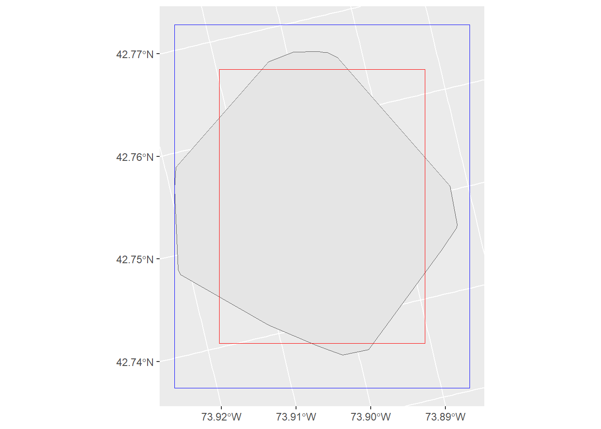

Calculating home-range overlaps with amt
Background
Several different indices have been proposed for measuring home-range overlap. These are reviewed by Fieberg & Kochanny (2005). There are two general approaches used to calculate home-range overlap: 1) calculate the percentage overlap at a given isopleth level (this works for geometric and probabilistic home ranges) or 2) calculate an index of similarity between the two utilization distributions (UD; this only works for probabilistic estimators)1.
1 For a discussion of geometric vs. probabilistic estimators see here: https://www.biorxiv.org/content/10.1101/2020.08.19.256859v2
Implementation in amt
amt currently implements all methods to calculate overlaps that were reviewed by Fieberg and Kochany (2005). These are:
-
hr: That is the proportion of the home range of instance \(i\) that overlaps with the home range of instance \(j\). This measure does not rely on a UD and is directional (i.e., \(HR_{i,j} \ne HR_{j,i}\)) and bound between 0 (no overlap) and 1 (complete overlap) -
phr: Is the probability of instance \(j\) being located in the home range of instance \(i\).phris also directional and bounded between 0 (no overlap) and 1 (complete overlap) -
vi: The volumetric intersection between two UDs. -
ba: The Bhattacharyya’s affinity between two UDs. -
udoi: A UD overlap index. -
hd: Hellinger’s distance between two UDs.
These overlap indices can be calculated with the function hr_overlap. The type of overlap measure an be controlled with the argument type.
All of these estimators can be calculated for a given home-range level (i.e., using conditional UDs). Whether or not a conditional overlap is desired or not, can be controlled with the argument conditional. For hr, the argument conditional has no effect and the isopleths used for home-range estimation will always be used for the overlap calculation.
The function hr_overlap() can also be provided with a list of home-range estimates in situations when overlap between many different instances are required. Currently, there are three options for calculating overlap among multiple instances: which = "all" calculates overlap for each pair of home ranges, which = "one_to_all" calculates overlap between the first element in the list and all others, and which = "consecutive" will calculate overlap between consecutive elements in the list.
Examples
First we need to load the required packages:
Two instances
We will use tracking data from Fishers from New York State, USA.
Create a template raster for the KDE
trast <- make_trast(amt_fisher |> filter(name %in% c("Leroy", "Lupe")), res = 50)And estimate home-ranges for both fishers
hr and phr are directional, this means the order matters. For all other overlap measures the order does not matter.
hr_overlap(hr_leroy, hr_lupe, type = "hr") # A tibble: 2 × 2
levels overlap
<dbl> <dbl>
1 0.9 0.309
2 0.5 0.191hr_overlap(hr_lupe, hr_leroy, type = "hr")# A tibble: 2 × 2
levels overlap
<dbl> <dbl>
1 0.9 0.986
2 0.5 0.574By default conditional = FALSE and the full UD is used.
hr_overlap(hr_leroy, hr_lupe, type = "phr", conditional = FALSE) # A tibble: 1 × 2
levels overlap
<dbl> <dbl>
1 1 1hr_overlap(hr_lupe, hr_leroy, type = "phr", conditional = FALSE)# A tibble: 1 × 2
levels overlap
<dbl> <dbl>
1 1 0.736If we set conditional = TRUE, the overlap is measured at home-range levels that were specified during estimation.
hr_overlap(hr_leroy, hr_lupe, type = "phr", conditional = TRUE) # A tibble: 2 × 2
levels overlap
<dbl> <dbl>
1 0.5 0.580
2 0.9 0.992hr_overlap(hr_lupe, hr_leroy, type = "phr", conditional = TRUE)# A tibble: 2 × 2
levels overlap
<dbl> <dbl>
1 0.5 0.221
2 0.9 0.401Note, for the remaining overlap measures the order does not matter. Below we show this for the volumnic intersection (type = "vi") as an example.
hr_overlap(hr_lupe, hr_leroy, type = "vi", conditional = FALSE)# A tibble: 1 × 2
levels overlap
<dbl> <dbl>
1 1 0.439hr_overlap(hr_leroy, hr_lupe, type = "vi", conditional = FALSE)# A tibble: 1 × 2
levels overlap
<dbl> <dbl>
1 1 0.439\(> 2\) instances
Lets calculate daily ranges for Lupe and then and then see how different ranges overlap with each other.
We have to use the same template raster in order to make ranges comparable.
trast <- make_trast(lupe, res = 50)Then we add a new column with day and calculate for each day a KDE home range.
Now we can use the list column with the home-range estimates to calculate overlap between the different home-ranges. By default which = "consecutive", this means for each list entry (= home-range estimate) the overlap to the next entry will be calculated.
hr_overlap(dat$kde, type = "vi")# A tibble: 3 × 4
from to levels overlap
<int> <int> <dbl> <dbl>
1 1 2 1 0.0431
2 2 3 1 0.551
3 3 4 1 0.612 This works as well, if we set conditional = TRUE:
hr_overlap(dat$kde, type = "vi", conditional = TRUE)# A tibble: 9 × 4
from to levels overlap
<int> <int> <dbl> <dbl>
1 1 2 0.5 0
2 1 2 0.95 0.0264
3 1 2 0.99 0.0357
4 2 3 0.5 0.264
5 2 3 0.95 0.528
6 2 3 0.99 0.547
7 3 4 0.5 0.318
8 3 4 0.95 0.592
9 3 4 0.99 0.608 Sometimes it can be useful to provide meaningful labels. We can do this with the labels argument.
hr_overlap(dat$kde, type = "vi", labels = dat$week)# A tibble: 3 × 4
from to levels overlap
<chr> <chr> <dbl> <dbl>
1 2010-12-12 2010-12-19 1 0.0431
2 2010-12-19 2010-12-26 1 0.551
3 2010-12-26 2011-01-02 1 0.612 Different options exist for the argument which. For example, which = "one_to_all" calculates the overlap between the first and all other home ranges.
Overlap between a home range and a simple feature
The function hr_overlap_feature allows to calculate percentage overlap (\(HR\) index) between a home. To illustrate this feature, we will use again the data from lupe and calculate the intersection with an arbitrary polygon.
poly <- amt::bbox(lupe, buffer = -500, sf = TRUE)
poly1 <- amt::bbox(lupe, sf = TRUE)
hr <- hr_mcp(lupe)
ggplot() + geom_sf(data = hr_isopleths(hr)) +
geom_sf(data = poly, fill = NA, col = "red") +
geom_sf(data = poly1, fill = NA, col = "blue")
hr_overlap_feature(hr, poly, direction = "hr_with_feature")# A tibble: 1 × 3
from to overlap
<dbl> <int> <dbl>
1 0.95 1 0.828hr_overlap_feature(hr, poly1, direction = "hr_with_feature")# A tibble: 1 × 3
from to overlap
<dbl> <int> <dbl>
1 0.95 1 1.00hr_overlap_feature(hr, poly, direction = "feature_with_hr")# A tibble: 1 × 3
from to overlap
<int> <dbl> <dbl>
1 1 0.95 0.854hr_overlap_feature(hr, poly1, direction = "feature_with_hr")# A tibble: 1 × 3
from to overlap
<int> <dbl> <dbl>
1 1 0.95 0.542The same work with several home-range levels:
hr <- hr_mcp(lupe, levels = c(0.5, 0.9, 0.95))
hr_overlap_feature(hr, poly, direction = "hr_with_feature")# A tibble: 3 × 3
from to overlap
<dbl> <int> <dbl>
1 0.5 1 0.828
2 0.9 1 0.860
3 0.95 1 0.990References
- Fieberg, J., & Kochanny, C. O. (2005). Quantifying home‐range overlap: the importance of the utilization distribution. The Journal of Wildlife Management, 69(4), 1346-1359.
Session
sessioninfo::session_info()─ Session info ───────────────────────────────────────────────────────────────
setting value
version R version 4.4.1 (2024-06-14 ucrt)
os Windows 11 x64 (build 22631)
system x86_64, mingw32
ui RTerm
language (EN)
collate English_United States.utf8
ctype English_United States.utf8
tz America/Denver
date 2024-10-17
pandoc 3.2 @ C:/Program Files/RStudio/resources/app/bin/quarto/bin/tools/ (via rmarkdown)
─ Packages ───────────────────────────────────────────────────────────────────
package * version date (UTC) lib source
amt * 0.2.2.0 2024-04-01 [1] CRAN (R 4.4.1)
backports 1.5.0 2024-05-23 [1] CRAN (R 4.4.0)
cachem 1.1.0 2024-05-16 [1] CRAN (R 4.4.1)
checkmate 2.3.1 2023-12-04 [1] CRAN (R 4.4.1)
class 7.3-22 2023-05-03 [1] CRAN (R 4.4.1)
classInt 0.4-10 2023-09-05 [1] CRAN (R 4.4.1)
cli 3.6.2 2023-12-11 [1] CRAN (R 4.4.0)
codetools 0.2-20 2024-03-31 [1] CRAN (R 4.4.1)
colorspace 2.1-0 2023-01-23 [1] CRAN (R 4.4.0)
DBI 1.2.3 2024-06-02 [1] CRAN (R 4.4.1)
digest 0.6.36 2024-06-23 [1] CRAN (R 4.4.1)
dplyr 1.1.4 2023-11-17 [1] CRAN (R 4.4.1)
e1071 1.7-14 2023-12-06 [1] CRAN (R 4.4.1)
evaluate 0.24.0 2024-06-10 [1] CRAN (R 4.4.1)
fansi 1.0.6 2023-12-08 [1] CRAN (R 4.4.0)
farver 2.1.2 2024-05-13 [1] CRAN (R 4.4.0)
fastmap 1.2.0 2024-05-15 [1] CRAN (R 4.4.1)
generics 0.1.3 2022-07-05 [1] CRAN (R 4.4.0)
ggforce 0.4.2 2024-02-19 [1] CRAN (R 4.4.1)
ggplot2 * 3.5.1 2024-04-23 [1] CRAN (R 4.4.0)
ggraph * 2.2.1 2024-03-07 [1] CRAN (R 4.4.1)
ggrepel 0.9.5 2024-01-10 [1] CRAN (R 4.4.1)
glue 1.7.0 2024-01-09 [1] CRAN (R 4.4.0)
graphlayouts 1.2.0 2024-09-24 [1] CRAN (R 4.4.1)
gridExtra 2.3 2017-09-09 [1] CRAN (R 4.4.0)
gtable 0.3.5 2024-04-22 [1] CRAN (R 4.4.0)
htmltools 0.5.8.1 2024-04-04 [1] CRAN (R 4.4.1)
htmlwidgets 1.6.4 2023-12-06 [1] CRAN (R 4.4.1)
igraph 2.0.3 2024-03-13 [1] CRAN (R 4.4.1)
jsonlite 1.8.8 2023-12-04 [1] CRAN (R 4.4.1)
KernSmooth 2.23-24 2024-05-17 [1] CRAN (R 4.4.1)
knitr 1.47 2024-05-29 [1] CRAN (R 4.4.1)
lattice 0.22-6 2024-03-20 [1] CRAN (R 4.4.1)
lifecycle 1.0.4 2023-11-07 [1] CRAN (R 4.4.0)
lubridate 1.9.3 2023-09-27 [1] CRAN (R 4.4.0)
magrittr 2.0.3 2022-03-30 [1] CRAN (R 4.4.0)
MASS 7.3-60.2 2024-04-26 [1] CRAN (R 4.4.1)
Matrix 1.7-0 2024-04-26 [1] CRAN (R 4.4.1)
memoise 2.0.1 2021-11-26 [1] CRAN (R 4.4.1)
munsell 0.5.1 2024-04-01 [1] CRAN (R 4.4.0)
pillar 1.9.0 2023-03-22 [1] CRAN (R 4.4.0)
pkgconfig 2.0.3 2019-09-22 [1] CRAN (R 4.4.0)
polyclip 1.10-6 2023-09-27 [1] CRAN (R 4.4.0)
proxy 0.4-27 2022-06-09 [1] CRAN (R 4.4.1)
purrr 1.0.2 2023-08-10 [1] CRAN (R 4.4.1)
R6 2.5.1 2021-08-19 [1] CRAN (R 4.4.0)
rbibutils 2.3 2024-10-04 [1] CRAN (R 4.4.1)
Rcpp 1.0.12 2024-01-09 [1] CRAN (R 4.4.0)
Rdpack 2.6.1 2024-08-06 [1] CRAN (R 4.4.1)
rlang 1.1.4 2024-06-04 [1] CRAN (R 4.4.0)
rmarkdown 2.27 2024-05-17 [1] CRAN (R 4.4.1)
rstudioapi 0.16.0 2024-03-24 [1] CRAN (R 4.4.1)
scales 1.3.0 2023-11-28 [1] CRAN (R 4.4.0)
sessioninfo 1.2.2 2021-12-06 [1] CRAN (R 4.4.1)
sf 1.0-16 2024-03-24 [1] CRAN (R 4.4.1)
survival 3.6-4 2024-04-24 [1] CRAN (R 4.4.1)
terra 1.7-78 2024-05-22 [1] CRAN (R 4.4.0)
tibble 3.2.1 2023-03-20 [1] CRAN (R 4.4.0)
tidygraph * 1.3.1 2024-01-30 [1] CRAN (R 4.4.1)
tidyr 1.3.1 2024-01-24 [1] CRAN (R 4.4.1)
tidyselect 1.2.1 2024-03-11 [1] CRAN (R 4.4.1)
timechange 0.3.0 2024-01-18 [1] CRAN (R 4.4.0)
tweenr 2.0.3 2024-02-26 [1] CRAN (R 4.4.1)
units 0.8-5 2023-11-28 [1] CRAN (R 4.4.1)
utf8 1.2.4 2023-10-22 [1] CRAN (R 4.4.0)
vctrs 0.6.5 2023-12-01 [1] CRAN (R 4.4.0)
viridis 0.6.5 2024-01-29 [1] CRAN (R 4.4.0)
viridisLite 0.4.2 2023-05-02 [1] CRAN (R 4.4.0)
withr 3.0.0 2024-01-16 [1] CRAN (R 4.4.0)
xfun 0.45 2024-06-16 [1] CRAN (R 4.4.1)
yaml 2.3.8 2023-12-11 [1] CRAN (R 4.4.0)
[1] C:/Users/C825033651/AppData/Local/Programs/R/R-4.4.1/library
──────────────────────────────────────────────────────────────────────────────